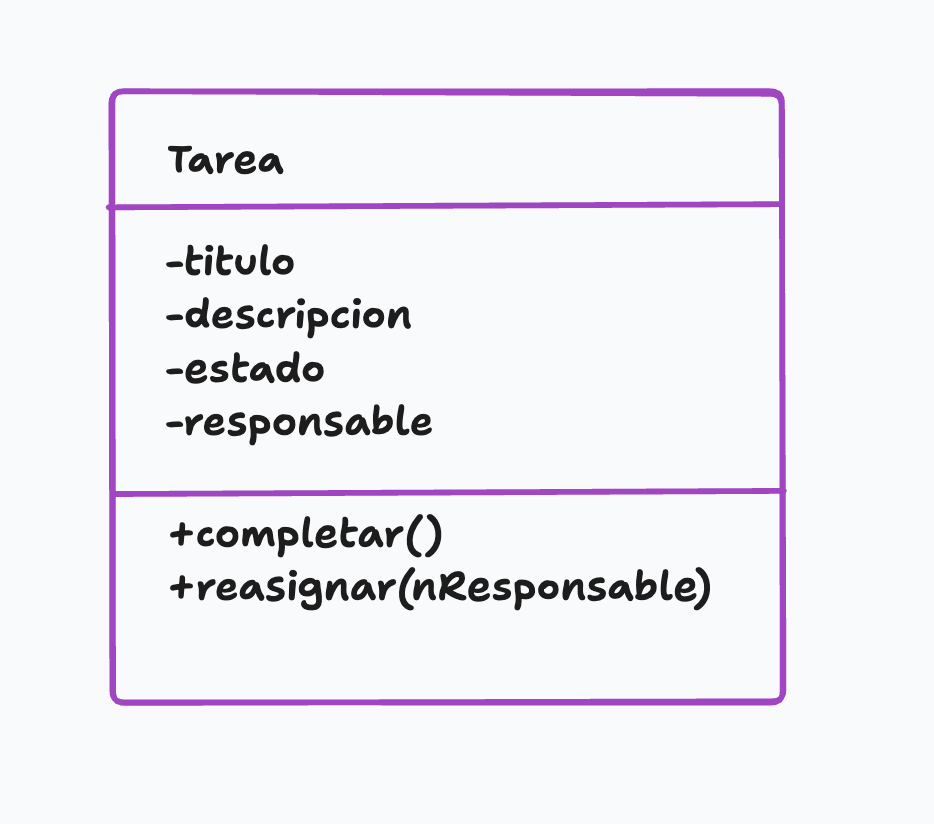
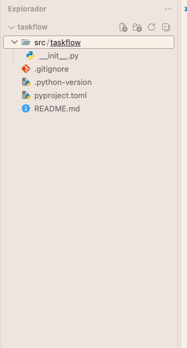
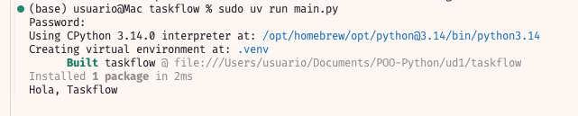
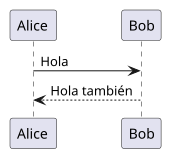

UD1. Python profesional y modelo orientado a objetos
📕 ¿Por qué necesitamos los objetos?
Tenemos que desarrollar una aplicación para gestionar proyectos en una empresa de software. ¿Cómo representamos usuarios, proyectos, tareas, equipos…?
Al principio, podríamos resolverlo con variables y funciones:
tarea_1_titulo = "Diseñar login"
tarea_1_estado = "pendiente"
tarea_1_responsable = "Ana"
tarea_2_titulo = "Crear API"
tarea_2_estado = "en progreso"
tarea_2_responsable = "Luis"Y funciones:
def completar_tarea(...):
...
def cambiar_responsable(...):
...
def mostrar_tarea(...):
...Rápidamente aparecen las preguntas: - ¿A qué proyecto pertenece la tarea?
¿Quién es responsable?
¿Qué ocurre si tenemos 200 tareas?
¿Cómo evitamos mezclar los datos?
¿Dónde colocamos las operaciones relacionadas con una tarea?
🍗 Pensar en objetos. Programación orientada a objetos
La POO organiza el software alrededor de objetos que representan elementos del problema y combinan información y comportamiento.
Un objeto representa una entidad que tiene:
- Información sobre sí mismo
- Comportamiento
- Una identidad propia
Podríamos pensar inicialmente en:
Proyecto
Tarea
UsuarioUna Tarea podría tener:
Título
Descripción
Estado
ResponsableY podría realizar determinadas acciones:
Completar
Reasignar
Cambiar de estadoEsto nos lleva a una serie de conceptos fundamentales.
Estado
El estado de un objeto es la información que describe cómo se encuentra ese objeto en un momento determinado.
El estado está compuesto por los datos o características que tiene un objeto en un momento determinado. En programación, el estado se almacena en las variables o atributos del objeto. El estado puede cambiar a lo largo del tiempo.
Por ejemplo, una tarea podría tener:
Título: Diseñar pantalla de login
Estado: pendiente
Responsable: AnaEse conjunto de valores forma parte del estado de la tarea.
Si la tarea se completa:
Título: Diseñar pantalla de login
Estado: completada
Responsable: AnaEl objeto sigue siendo la misma tarea, pero su estado ha cambiado.
Podemos representar el cambio:
ESTADO INICIAL
estado = “pendiente”
│
│ completar()
▼NUEVO ESTADO
estado = “completada”
Clase ≠ Estado
Una clase es el molde, plantilla o plano arquitectónico a partir del cual se crean los objetos. No es un objeto real, sino la definición de cómo será ese objeto. Define qué datos tendrá y qué acciones podrá realizar.
Una clase define qué información puede tener un determinado tipo de objeto.
Pero cada instancia tendrá sus propios valores.
Por ejemplo:
Tarea
│
├── tarea1
│ ├── título: "Diseñar login"
│ └── estado: "pendiente"
├── tarea2
│ ├── título: "Crear API"
│ └── estado: "en progreso"
└── tarea3
├── título: "Escribir documentación"
└── estado: "completada"Las tres pertenecen a la clase Tarea, pero sus estados son diferentes.
En Python:
tarea1 = Tarea()
tarea2 = Tarea()
tarea3 = Tarea()Cada objeto tiene su propio estado.
Objeto
Un objeto es una entidad concreta creada a partir de una clase.
Instancia
En Python utilizamos habitualmente el término instancia para referirnos a un objeto concreto creado a partir de una clase.
Por ejemplo:
tarea1 = Tarea() tarea2 = Tarea()
Podemos representarlo:
CLASE
Tarea
│
┌────────┴────────┐
▼ ▼
tarea1 tarea2
instancia instanciaLas dos instancias pertenecen a la misma clase, pero son objetos diferentes.
tarea1 = Tarea()
tarea2 = Tarea()
print(tarea1 is tarea2)Resultado:
False
Comportamiento
El comportamiento representa las acciones que un objeto puede realizar.
Una tarea podría:
completar()
reasignar()
cambiar_estado()Por ejemplo:
tarea.completar()
puede provocar:
estado = "pendiente"
│
│ completar()
▼
estado = "completada"El comportamiento se implementará mediante métodos.
Podemos representarlo así:

Responsabilidad
¿De qué debería encargarse cada objeto?
Una responsabilidad es aquello que un objeto debe conocer o hacer dentro del sistema.
Por ejemplo, podemos decir que una Tarea es responsable de:
- conocer su título;
- conocer su estado;
- conocer su responsable;
- cambiar su estado;
- cambiar su responsable.
Pero probablemente no debería ser responsable de:
- enviar correos electrónicos;
- generar documentos PDF;
- conectarse directamente a una base de datos;
- enviar mensajes a Telegram.
Una pregunta importante cuando diseñes una clase es: ¿Tiene sentido que este objeto sea responsable de hacer esto?
✍ El modelo mental fundamental
A partir de ahora podemos analizar cualquier problema siguiendo esta secuencia:
PROBLEMA REAL -> ¿Qué cosas existen? -> OBJETOS -> ¿Qué sabe cada objeto? -> ESTADO -> ¿Qué puede hacer? -> COMPORTAMIENTO -> ¿De qué debe encargarse? -> RESPONSABILIDADES -> DISEÑO -> UML
🐍 Primer contacto con Python
IDE
Vamos a utilizar como ide VSCode + extensión oficial de Python de Microsoft
Creación de un entorno virtual
Necesitamos la creación de un entorno virtual. Vamos a empezar a trabajar como se trabajaría en un proyecto profesional, por lo tanto, no vamos a instalar todas las dependencias de nuestros proyectos en global en el equipo sino locales a cada proyecto.
Si lo instalásemos de forma global, como vemos a continuación, podría provocar conflictos de paquetes y versiones.
PYTHON DEL ORDENADOR
│
├── Proyecto A
│ └── dependencias
│
├── Proyecto B
│ └── dependencias
│
└── Proyecto C
└── dependenciasCon un entorno virtual:
PYTHON DEL ORDENADOR
│
├── entorno proyecto A
│ ├── Python
│ └── dependencias
│
├── entorno proyecto B
│ ├── Python
│ └── dependencias
│
└── entorno proyecto C
├── Python
└── dependenciasCada proyecto ve su versión de Python y las dependencias que necesita con sus versiones correspondientes.
Gestión de nuestros proyectos
Para la gestión del entorno virtual de cada proyecto tenemos dos opciones:
PROYECTO PYTHON
│
┌─────────┴─────────┐
│ │
ENTORNO AISLADO GESTIÓN DEL PROYECTO
│ │
venv uv
│ │
"Dónde se instalan "Cómo gestiono
las dependencias" el proyecto"Con uv también podemos crear y gestionar nuestros entornos virtuales, por lo que uv puede sustituir el uso directo de venv en el día a día
¿Qué es venv?
venv es una herramienta que viene incluída con Python y sirve fundamentalmente para crear un entorno virtual aislado.
python -m venv .venvEsto crea:
mi-proyecto/
└── .venv/Normalmente tenemos que activarlo. En Mac:
source .venv/bin/activateEn Windows:
.venv\Scripts\activateDespués podríamos instalar los paquetes que necesitásemos de este modo (ejemplo):
pip install pytestDentro de .venv tendremos un entorno independiente donde podemos instalar paquetes.
La razón de utilizarlo es evitar situaciones como:
PROYECTO A
└── necesita requests 2.x
PROYECTO B
└── necesita requests 3.xSin entornos virtuales, ambos proyectos podrían entrar en conflicto.
Con entornos virtuales:
PROYECTO A
└── .venv/
└── requests 2.x
PROYECTO B
└── .venv/
└── requests 3.xCada proyecto tiene su propio entorno
¿Qué es uv?
En proyectos profesionales vamos a utilizar
uvpara gestionar nuestros proyectos en Python.uvpuede crear y administrar el entorno virtual, además de gestionar las dependencias.
Por ejemplo:
uv inity
uv add pytesty
uv run main.pyTambién podríamos hacer:
uv venvy esto crearía un entorno virtual .venv
Conceptualmente:
python -m venv .venv
│
▼
crea entorno
uv venv
│
▼
crea entornoLos dos crean un entorno virtual. La diferencia es quién lo gestiona.
En este módulo utilizaremos
uvpara gestionar los proyectos Python
Flujo que vamos a seguir
Instalaciones
En primer lugar, debemos instalar Python:
También debemos tener instalado uv, para ello:
En Mac
sudo curl -LsSf https://astral.sh/uv/install.sh | sudo shEn Windows, en la consola de Powershell
powershell -ExecutionPolicy ByPass -c "irm https://astral.sh/uv/install.ps1 | iex"Alternativa con Winget:
winget install --id astral.uvEn cualquier sistema operativo, si tenemos pip instalado podemos hacer:
pip install uvCreación de un proyecto
Por ejemplo, para Taskflow, crearíamos:
mkdir taskflow
cd taskflow
uv initCreamos un fichero main.py:
print("Hola, Taskflow")uv run main.pyEsto crea la siguiente estructura:

uvpuede crear y gestionar entornos virtuales y proporciona además herramientas para gestionar el proyecto, sus dependencias y su ejecución.venves la herramienta estándar incluida con Python para crear entornos virtuales.

Repositorios: Git
¿Qué problema resuelve Git?
taskflow_final.py
taskflow_final_v2.py
taskflow_final_v3.py
taskflow_final_definitivo.py
taskflow_final_definitivo_ahora_si.py
¿Cómo sabemos qué hemos cambiado?
¿Podemos volver atrás?
¿Quién hizo el cambio?
¿Qué ocurre si trabajamos dos personas?
Git es un sistema de control de versiones. Permite registrar la evolución de un proyecto y recuperar versiones anteriores
En este módulo vamos a utilizar:
Git
↓
Sistema de control de versiones
GitHub
↓
Servicio donde podemos alojar
repositorios Git y colaborarInstalaciones necesarias
- Necesitamos instalar Git
- Necesitamos tener una cuenta en Github para almacenar nuestros repositorios
Primeros pasos
Creamos un repositorio en Github
Tenemos que inicializar Git en la carpeta local de nuestro proyecto
git init- Cambiamos el nombre de nuestra rama principal para asegurarnos que es
main
git branch -M mainEsto crea un directorio .git
- Conectamos la carpeta local con el repositorio remoto de GitHub
git remote add origin [URL-HTTPS-del-repositorio]- Preparamos y confirmamos nuestros archivos
git add .
git commit -m "Primer commit"- Subimos los cambios a GitHub
git push -u origin main🐉 Clases en Python
Una clase básica:
class Tarea:
pass
tarea1 = Tarea()
tarea2 = Tarea()print(type(tarea1))Son objetos diferentes tarea1 != tarea2
💉 Atributos
Los atributos almacenan información asociada a un objeto.
Podemos hacer:
class Tarea:
pass
tarea = Tarea()
tarea.titulo = "Diseñar login"
tarea.estado = "pendiente"
tarea.responsable = "Ana"
print(tarea.titulo)
tarea.estado = "completada"
print(tarea.estado)🐹 Constructor, ¿por qué lo necesitamos?
Aunque la solución anterior funciona, tiene un problema.
Podemos crear:
tarea1 = Tarea()
tarea1.titulo = "Diseñar login"y olvidarnos de tarea1.estado y tarea1.responsable. Esto provoca que el objeto no esté completo.
Queremos que Tarea se cree correctamente desde el principio. Para ello utilizamos __init__.
El método __init__
Podemos definir:
class Tarea:
def __init__(self, titulo, esponsable):
self.titulo = titulo
self.responsable = responsable
self.estado = "pendiente"Ahora:
tarea1 = Tarea("Diseñar login", "Ana")
__init__se ejecuta cuando creamos una instancia.
por ejemplo al hacer:
tarea = Tarea("Diseñar login", "Ana")En este momento, Python crea el objeto y ejecuta su método
__init__para inicializarlo.
🏯 ¿Qué es self?
self es uno de los conceptos fundamentales de la POO en Python. Representa la instancia del objeto que se está creando o utilizando.
Cuando escribimos:
class Tarea:
def __init__(self, titulo):
self.titulo = titulo
selfrepresenta la instancia concreta sobre la que estamos trabajando
Si hacemos:
tarea1 = Tarea("Diseñar login")
tarea2 = Tarea("Crear API")el self dentro de __init__ se refiere a tarea1 en la primera llamada y a tarea2 en la segunda.
Por esto,
self.titulosignifica el atributotitulode la instancia concreta que estamos creando o manipulando.
🐈 Parámetro frente a atributo
Observa este código:
class Tarea:
def __init__(self, titulo):
self.titulo = tituloAquí aparecen dos elementos llamados titulo:
- Parámetro:
tituloes un parámetro del método__init__. - Atributo:
self.tituloes un atributo del objeto. Es una variable que pertenece a la instancia concreta y almacena información sobre ella.
🐦 Métodos
Un método es una función definida dentro de una clase que representa un comportamiento del objeto. Los métodos pueden acceder y modificar los atributos del objeto.
class Tarea:
def __init__(self, titulo, responsable):
self.titulo = titulo
self.responsable = responsable
self.estado = "pendiente"
def completar(self):
self.estado = "completada"Uso:
tarea1 = Tarea("Diseñar login", "Ana")
print(tarea1.estado) # pendiente
tarea1.completar()
print(tarea1.estado) # completadaEl método completar cambia el estado de la tarea a “completada”.
Métodos con parámetros
Los métodos también pueden recibir información:
class Tarea:
def __init__(self, titulo, responsable):
self.titulo = titulo
self.responsable = responsable
self.estado = "pendiente"
def reasignar(self, nuevo_responsable):
self.responsable = nuevo_responsablePodemos utilizarlo:
tarea1 = Tarea("Diseñar login", "Ana")
tarea1.reasignar("Luis")
print(tarea1.responsable) # LuisEn este caso,
nuevo_responsablees un parámetro del métodoreasignar, yself.responsablees el atributo de la instancia que estamos modificando.
self y los métodos de instancia
Observa:
class Tarea:
def __init__(self, titulo, responsable):
self.titulo = titulo
self.responsable = responsable
self.estado = "pendiente"
def mostrar(self):
print(f"Título: {self.titulo}, Estado: {self.estado}, Responsable: {self.responsable}")Cuando hacemos tarea.mostrar(), Python pasa automáticamente la instancia tarea como el primer argumento self al método mostrar. Esto permite que el método acceda a los atributos de esa instancia específica.
🎛 Una clase completa
class Tarea:
def __init__(self, titulo, responsable):
self.titulo = titulo
self.responsable = responsable
self.estado = "pendiente"
def completar(self):
self.estado = "completada"
def reasignar(self, nuevo_responsable):
self.responsable = nuevo_responsable
def mostrar(self):
print(f"Título: {self.titulo}, Estado: {self.estado}, Responsable: {self.responsable}")Podemos crear una instancia:
tarea = Tarea("Diseñar login", "Ana")
tarea.mostrar() # Título: Diseñar login, Estado: pendiente, Responsable: Ana
tarea.completar()
tarea.mostrar() # Título: Diseñar login, Estado: completada, Responsable: Ana
tarea.reasignar("Luis")
tarea.mostrar() # Título: Diseñar login, Estado: completada, Responsable: LuisTambién podemos crear varias instancias:
tarea1 = Tarea("Diseñar login", "Ana")
tarea2 = Tarea("Crear API", "Luis")
tarea3 = Tarea("Escribir documentación", "Marta")
tarea1.completar()
print(tarea1.estado) # completada
print(tarea2.estado) # pendiente
print(tarea3.estado) # pendiente📌 Referencias a objetos
En Python, las variables que contienen objetos no almacenan el objeto en sí, sino una referencia al objeto en memoria. Esto significa que si asignamos un objeto a otra variable, ambas variables apuntarán al mismo objeto.
Esto será especialmente importante cuando trabajemos con: - listas de objetos - diccionarios de objetos - composición de objetos (objetos que contienen otros objetos) …
Por ahora, nos basta con comprender que una variable puede hacer referencia a un objeto.
📊 UML: representar el diseño
UML (Unified Modeling Language) es un lenguaje gráfico utilizado para modelar sistemas de software. Permite representar clases, objetos, relaciones y comportamientos de manera visual.
En esta unidad utilizaremos diagramas de clases UML para representar nuestras clases y sus relaciones.
Una clase puede representarse así:
Prueba PlantUML
